基于MyQQ机器人框架搭建qq机器人
前言 很早以前就有搭建一个能自动收发消息的qq机器人的想法，但是一直找不到可行的方法
webqq被腾讯关闭了，无法使用；qq网络消息是加密的，而且本人的计网水品也达不到抓包并解密的程度；qq的本地消息数据库也是qq自建的，无法从外部读取；用windows的api直接获取窗体数据太过于繁琐而且灵活性很差
在种种方式都不可行的情况下，只能借助第三方工具，MyQQ机器人框架，是一款功能强大的qq消息收发机器人框架，可以接收文字、图片、点赞、好友登录离线等多种qq消息，也可以发送文字、图片、回复等多种qq消息
在这里我们借用MyQQ机器人框架帮助我们解决qq消息的IO问题
MyQQ YYDS！
准备 MyQQ机器人框架 进入MyQQ机器人官网首页（MyQQ机器人官网首页 ），按照教程（框架使用教程-新手必看 ）下载并配置好MyQQ备用
相关文档首页 | MyQQ机器人
python 安装好MyQQ机器人后不需要安装其他的插件，我们将直接使用MyQQ官方提供的HTTP API插件
使用这个插件我们需要自己构建一个web服务器来接收MyQQ获取到的消息，为了方便和后续的扩展开发，我们选择python语言进行开发
安装python并配置好相关环境
将使用到的python相关的包 fastapi、uvicorn、pydantic
1 2 3 pip install fastapi pip install uvicorn pip install pydantic
这三个包用于搭建web服务器，在本项目中不需要实现很复杂的web服务，这个服务器也将一直在本地运行，因此可以看我的另一篇博客快速入门使用：python实现web api
MyQQ机器人框架消息收发 如果已经根据教程设置好MyQQ了，那么应该能够知道，MyQQ的接收到消息后会主动发送post请求到指定的url；我们希望发送消息时，则可以post或get到MyQQ指定的url
如果不知道post和get请求是什么，请百度搜索REST API
服务器基础结构 首先，构建一个基础的工程目录
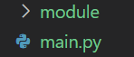
module文件夹一会就会使用到，首先在main.py文件中写下：
1 2 3 4 5 6 7 8 9 10 11 12 13 14 15 16 17 18 19 20 21 from fastapi import FastAPI, Bodyfrom fastapi.middleware.cors import CORSMiddlewareimport uvicornapp = FastAPI() app.add_middleware( CORSMiddleware, allow_origins=["*" ], allow_credentials=True , allow_methods=["*" ], allow_headers=["*" ] ) @app.post('/' def fun1 ('''在这里填入参数''' return {"status" :1 } if __name__ == "__main__" : uvicorn.run(app = app, host = '''填入本地ip''' , port = '''指定的端口号''' )
这样一个能处理post请求的web服务器就搭建完成了，由于这个服务器只需要接收post请求，所以这里只需要写一个post即可
注意：
在解决跨域时，这里直接允许所有的访问，这在生产环境中显然是不安全的，但是仅仅在本地内网使用的情况下，先姑且这样处理
接收一个消息 编写post 根据MyQQ官网中关于消息回调 的信息，MyQQ给出的post请求携带json格式信息，其内容如下：
1 2 3 4 5 6 7 8 9 10 11 12 13 { "MQ_robot" : "1330166568" , "MQ_type" : 1 , "MQ_type_sub" : 0 , "MQ_fromID" : "1330166565" , "MQ_fromQQ" : "1330166565" , "MQ_passiveQQ" : "1330166568" , "MQ_msg" : "123%E6%B5%8B%E8%AF%95,loveyou" , "MQ_msgSeq" : "1482636593" , "MQ_msgID" : "1243" , "MQ_msgData" : "4F 48 BB 25 4F 48 BB 28 00 06 36 04 09 95 68 BD 1F 40 00 A6 00 00 00 2D 00 05 00 02 00 01 00 06 00 04 00 01 01 01 00 09 00 06 00 01 00 00 00 01 00 0A 00 04 01 00 00 00 00 01 00 04 00 00 00 00 00 03 00 01 02 3A 03 4F 48 BB 25 4F 48 BB 28 E7 B9 55 10 DA 5A 21 52 F4 EA 9C 41 C7 BE F7 A8 00 0B 04 DB 60 75 66 A5 02 43 00 00 00 00 01 00 00 00 01 4D 53 47 00 00 00 00 00 60 75 66 A5 58 5F 3D 31 00 00 00 00 0B 00 86 31 00 0C E5 BE AE E8 BD AF E9 9B 85 E9 BB 91 00 00 01 00 0C 01 00 09 31 32 33 E6 B5 8B E8 AF 95 19 00 1E 01 00 1B AA 02 18 08 08 9A 01 13 78 80 80 04 C8 01 00 F0 01 00 F8 01 00 90 02 00 CA 04 00 0E 00 07 01 00 04 00 00 00 00" , "MQ_timestamp" : "1630051875" , }
详细的参数含义请见上面链接中的文档说明
参数数量比较大，因此我们考虑使用模型类来处理信息，在python实现web api 展示的模型类就是它，我们把这个模型类放到module文件夹下的MSG_CALL_BACK.py文件中
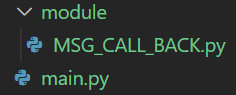
1 2 3 4 5 6 7 8 9 10 11 12 13 14 from pydantic import BaseModelclass MSG_CALL_BACK (BaseModel ): MQ_robot: str MQ_type: int MQ_type_sub: int MQ_fromID: str MQ_fromQQ: str MQ_passiveQQ: str MQ_msg: str MQ_msgSeq: str MQ_msgID: str MQ_msgData: str MQ_timestamp: str
post处理
首先引入模型类
1 from module.MSG_CALL_BACK import MSG_CALL_BACK
1 2 3 4 @app.post('/' def read_model (item:MSG_CALL_BACK = Body(... ) ): print (item) return {"status" :1 }
我们把fun1的名字改成了read_model，参数命名为item，并指定是MSG_CALL_BACK类型以便于代码编写时的处理，在函数中打印出item，最后返回状态为1
即使不指定item的类型在python中也是完全可行的，只不过指定类型后在编写时会有代码提示，也便于代码的理解
指定本机地址和端口号 1 2 if __name__ == "__main__" : uvicorn.run(app = app, host = "0.0.0.0" , port = "8000" )
在MyQQ的HTTP API设置中也做好相同的设置
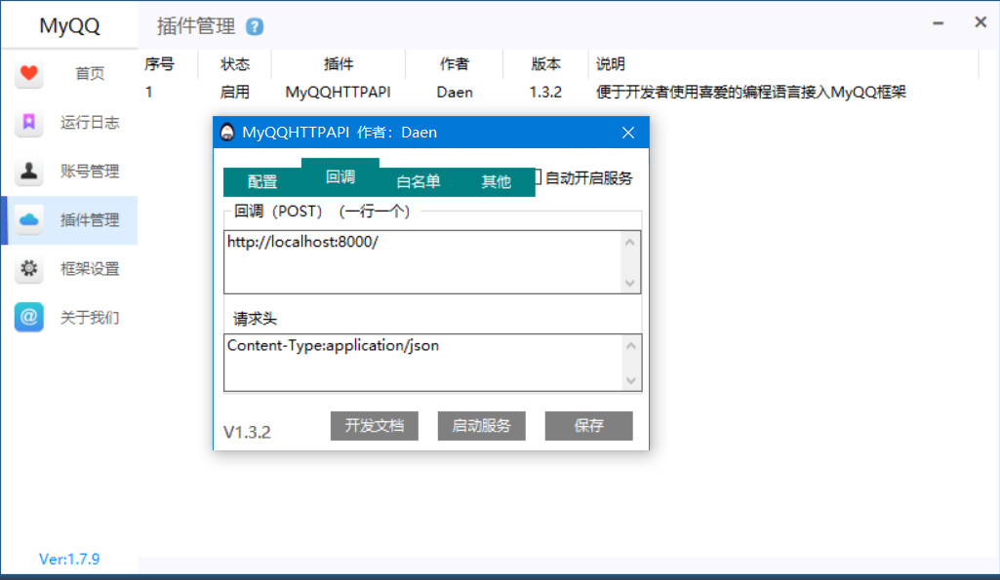
试验结果 到这里我们已经可以做到接收一个消息了，来试验一下是否发送成功吧
首先登陆机器人qq
启动服务器
1 uvicorn main:app --reload
注意这里的main表示我的代码在main.py文件中，而且fastapi实例名为app，如果你的设置不是这样的，那么应当修改对应的参数
然后向这个机器人qq发送一条消息
我们确实成功接收到消息了，而且消息内容在MQ_msg中
进一步处理消息 有一个问题，如果消息内容是中文，那么消息在传送时会转码
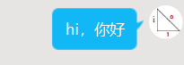
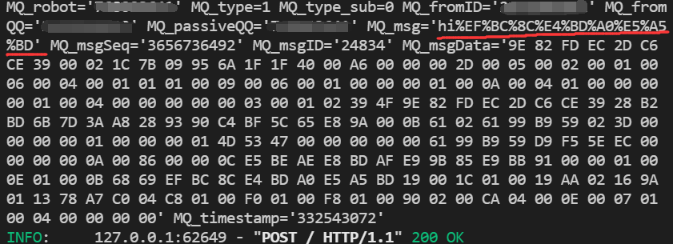
因此我们需要将消息内容进一步解码
解码需要引入新的包
1 from urllib.parse import unquote
使用unquote进行解码
1 2 3 4 5 @app.post('/' def read_model (item:MSG_CALL_BACK = Body(... ) ): received_msg = unquote(item.MQ_msg) print (received_msg) return {"status" :1 }
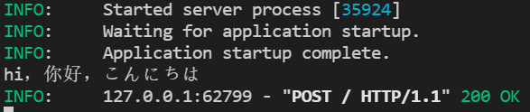
这样就能获取到正常的消息啦
实现消息接收的完整代码 此时的目录结构：
1 2 3 4 │ main.py │ └─module | MSG_CALL_BACK.py
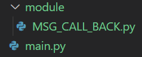
main.py:
1 2 3 4 5 6 7 8 9 10 11 12 13 14 15 16 17 18 19 20 21 22 23 24 25 from fastapi import FastAPI, Bodyfrom fastapi.middleware.cors import CORSMiddlewareimport uvicornfrom module.MSG_CALL_BACK import MSG_CALL_BACK from urllib.parse import unquoteapp = FastAPI() app.add_middleware( CORSMiddleware, allow_origins=["*" ], allow_credentials=True , allow_methods=["*" ], allow_headers=["*" ] ) @app.post('/' def read_model (item:MSG_CALL_BACK = Body(... ) ): received_msg = unquote(item.MQ_msg) print (received_msg) return {"status" :1 } if __name__ == "__main__" : uvicorn.run(app = app, host = "0.0.0.0" , port = "8000" )
MSG_CALL_BACK.py:
1 2 3 4 5 6 7 8 9 10 11 12 13 14 15 from pydantic import BaseModelclass MSG_CALL_BACK (BaseModel ): MQ_robot: str MQ_type: int MQ_type_sub: int MQ_fromID: str MQ_fromQQ: str MQ_passiveQQ: str MQ_msg: str MQ_msgSeq: str MQ_msgID: str MQ_msgData: str MQ_timestamp: str
发送一个消息 发送消息可以使用post也可以使用get，笔者使用get请求
post方式 官网文档中的说法是：
以下用http://localhost:10002/MyQQHTTPAPI作为演示
我们强烈推荐使用POST 请求方式
提交地址：
1 http://localhost:10002/MyQQHTTPAPI
提交数据：
1 2 3 4 5 6 7 8 9 10 11 { "function" : "Api_SendMsg" , "token" : "666" , "params" : { "c1" : "363751070" , "c2" : "2" , "c3" : "320562077" , "c4" : "" , "c5" : "你好，测试一下" } }
使用post的好处是比get更加安全，因为get是明文传输的，然而我试了好久都只能让post的消息以Form的形式提交，而MyQQ貌似并不能接收这样的post请求，所以笔者将使用get请求 ，如果你知道如何使用post实现发送消息，敬请留言交流
get方式 使用get请求传参：
名称
参数
值
请求地址
http://localhost:10002/MyQQHTTPAPIhttp://localhost:10002/MyQQHTTPAPI
调用函数
function
要调用的函数英文名(查看右侧API列表)
token
token
后台设置的token
参数一
c1
如有中文可能有需要URL UTF8编码
参数二
c2
如有中文可能有需要URL UTF8编码
参数三
c3
如有中文可能有需要URL UTF8编码
参数四
c4
如有中文可能有需要URL UTF8编码
以此类推…
以此类推…
如有中文可能有需要URL UTF8编码
从参数结构可以看出，调用函数和token是固定的必填项剩下的参数根据api列表直接c1，c2这样命名下去就好了，那么我们来写一个发送消息的函数
新建类
为了后续的扩展开发，我们不妨新建一个文件来专门处理消息的发送
1 2 3 4 5 6 7 │ main.py │ └─business │ msg_sender.py │ router.py └─module | MSG_CALL_BACK.py
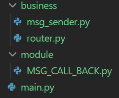
我们构建这样一个目录结构，刚才写好的代码都在main.py中，模型类在MSG_CALL_BACK.py中
现在新建一个business文件夹，在其中新建msg_sender.py和router.py
Router.py将用于消息的进一步转发处理，因为上文提到，MyQQ机器人框架接收到的消息远不止聊天消息，好友上下线、邀请入群、群聊解散等等消息它都能接收，哪怕是聊天消息，也分好友聊天、群聊、临时会话，不同的消息可能需要不同的处理方式 ，这就是Router负责的内容，它负责分辨不同种类的消息，并将消息发送给对应模块处理
msg_sender.py便是我们的消息发送模块了，它负责将消息通过get请求发送给MyQQ，MyQQ再将消息发送到qq
msg_sender 基本结构 1 2 3 4 5 6 7 class MsgSender : def __init__ (self ) -> None : pass @staticmethod def send_pure_text_msg_2_person (self, target_qq:str , msg:str , robot_qq:str ): pass
查阅发送消息的api API列表
Api_SendMsg
无返回值
向对象、目标发送消息 支持好友 群 讨论组 群临时会话 讨论组临时会话
响应QQ
文本型
机器人QQ
消息类型
1好友 2群 3讨论组 4群临时会话 5讨论组临时会话 6在线临时会话
收信群_讨论组
文本型
发送群信息、讨论组信息、群临时会话信息、讨论组临时会话信息时填写
收信对象
文本型
最终接收这条信息的对象QQ
内容
文本型
信息内容
根据api信息构建发送参数 不妨使用如下图的配置信息
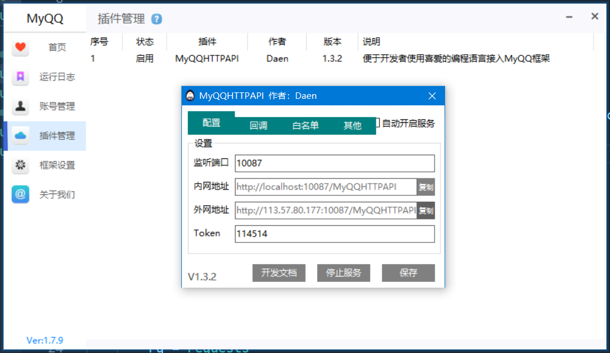
1 2 3 4 5 6 7 8 9 10 11 12 13 14 15 class MsgSender : def __init__ (self ) -> None : self.httpapi_token = "114514" self.httpapi_url = "http://localhost:10087/MyQQHTTPAPI" def send_pure_text_msg_2_person (self, target_qq:str , msg:str , robot_qq:str ): Values = { "function" : "Api_SendMsg" , "token" : self.httpapi_token, "c1" : robot_qq, "c2" : "1" , "c3" : "" , "c4" : target_qq, "c5" : msg }
转码消息 接收消息的时候可以看到非英文字符都经过了一次转码再发送，因此我们在发送消息的时候也需要对中文字符进行转码
引入包：
转码：
1 data = urllib.parse.urlencode(Values).encode("utf-8" )
消息发送 引入包：
发送消息：
1 2 rq = requests rq = requests.get(self.httpapi_url, params=Values)
打印返回值 返回值表示对方服务器的响应，打印返回值可以了解自己的请求是否被对方接收，对方是否正常响应、处理了我们的请求
1 print (rq.content.decode("utf-8" ))
msg_sender完整代码 1 2 3 4 5 6 7 8 9 10 11 12 13 14 15 16 17 18 19 20 21 22 23 24 25 import urllib.parseimport urllib.requestimport requestsclass MsgSender : def __init__ (self ) -> None : self.httpapi_token = "114514" self.httpapi_url = "http://localhost:10087/MyQQHTTPAPI" def send_pure_text_msg_2_person (self, target_qq:str , msg:str , robot_qq:str ): Values = { "function" : "Api_SendMsg" , "token" : self.httpapi_token, "c1" : robot_qq, "c2" : "1" , "c3" : "" , "c4" : target_qq, "c5" : msg } data = urllib.parse.urlencode(Values).encode("utf-8" ) rq = requests rq = requests.get(self.httpapi_url, params=Values) print (rq.content.decode("utf-8" ))
router 基本结构： 1 2 3 4 5 6 7 8 9 10 11 from module.MSG_CALL_BACK import MSG_CALL_BACKfrom urllib.parse import unquoteclass Router : def __init__ (self ): pass @staticmethod def handle_post (item:MSG_CALL_BACK ): pass
用staticmethod修饰表示其不依赖其他的变量
消息转码 先将获取到的消息进行转码
1 2 3 4 @staticmethod def handle_post (item:MSG_CALL_BACK ): received_msg = unquote(item.MQ_msg) print ("收到消息：" , received_msg)
判断消息类型 由api列表可知，当MQ_type为1时表示消息来自好友聊天，我们在这里设置只回应私聊消息
1 2 3 4 5 6 7 8 9 @staticmethod def handle_post (item:MSG_CALL_BACK ): print ("发送消息的qq号：" , item.MQ_fromQQ) received_msg = unquote(item.MQ_msg) print ("消息为：" , received_msg) print ("MQ_type：" , item.MQ_type) if (item.MQ_type == 1 ): pass
增加了几条print信息，便于我们在控制台中查看
发送消息 引入刚刚写好的msg_sender
1 from business.msg_sender import MsgSender
对消息发送者做出回复
1 2 3 4 5 6 7 8 9 10 11 12 @staticmethod def handle_post (item:MSG_CALL_BACK ): print ("发送消息的qq号：" , item.MQ_fromQQ) received_msg = unquote(item.MQ_msg) print ("消息为：" , received_msg) print ("MQ_type：" , item.MQ_type) if (item.MQ_type == 1 ): response_msg = "收到了你发的消息，你发的消息是：" + received_msg current_robot_qq = "" MsgSender().send_pure_text_msg_2_person(item.MQ_fromQQ, response_msg , current_robot_qq)
router完整代码 1 2 3 4 5 6 7 8 9 10 11 12 13 14 15 16 17 18 19 20 from module.MSG_CALL_BACK import MSG_CALL_BACKfrom urllib.parse import unquotefrom business.msg_sender import MsgSenderclass Router : def __init__ (self ): pass @staticmethod def handle_post (item:MSG_CALL_BACK ): print ("发送消息的qq号：" , item.MQ_fromQQ) received_msg = unquote(item.MQ_msg) print ("消息为：" , received_msg) print ("MQ_type：" , item.MQ_type) if (item.MQ_type == 1 ): response_msg = "收到了你发的消息，你发的消息是：" + received_msg current_robot_qq = "" MsgSender().send_pure_text_msg_2_person(item.MQ_fromQQ, response_msg , current_robot_qq)
改写main 此时可以在main.py中引入router并将post中的数据传入
1 from business.router import Router
1 2 3 4 5 6 7 8 9 10 11 12 13 14 15 16 17 18 19 20 21 22 23 24 from fastapi import FastAPI, Bodyfrom fastapi.middleware.cors import CORSMiddlewareimport uvicornfrom module.MSG_CALL_BACK import MSG_CALL_BACK from business.router import Router app = FastAPI() app.add_middleware( CORSMiddleware, allow_origins=["*" ], allow_credentials=True , allow_methods=["*" ], allow_headers=["*" ] ) @app.post('/' def read_model (item:MSG_CALL_BACK = Body(... ) ): Router.handle_post(item) return {"status" :1 } if __name__ == "__main__" : uvicorn.run(app = app, host = "0.0.0.0" , port = "8000" )
试验消息收发功能 在控制台中输入
1 uvicorn main:app --reload
启动服务器
同时确保MyQQ机器人已经在线，并开启了HTTP API插件的服务
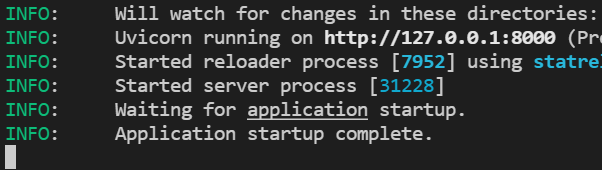
此时我们写好的服务器已经开始工作了，我们发送一条消息试试
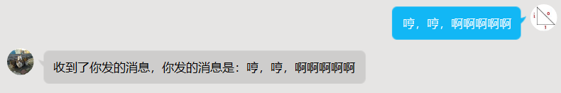
成功收到了机器人的回复，此时的控制台输出为
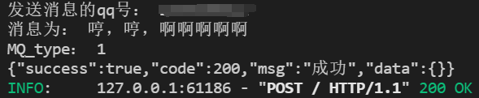
其中，前三行是我们打印的输出，第四行是MyQQ服务器的返回信息，告诉我们发送的消息已经被成功处理，第五行是本地服务器打印的信息，表示服务器被访问了
结束 一个简单的能处理输入输出的qq机器人就搭建完成了，后续还可以在此基础上增加各种功能，比如发送图片，自动点赞，自动发送天气预报，基于人工智能的自动聊天等等
附件 本文的相关代码